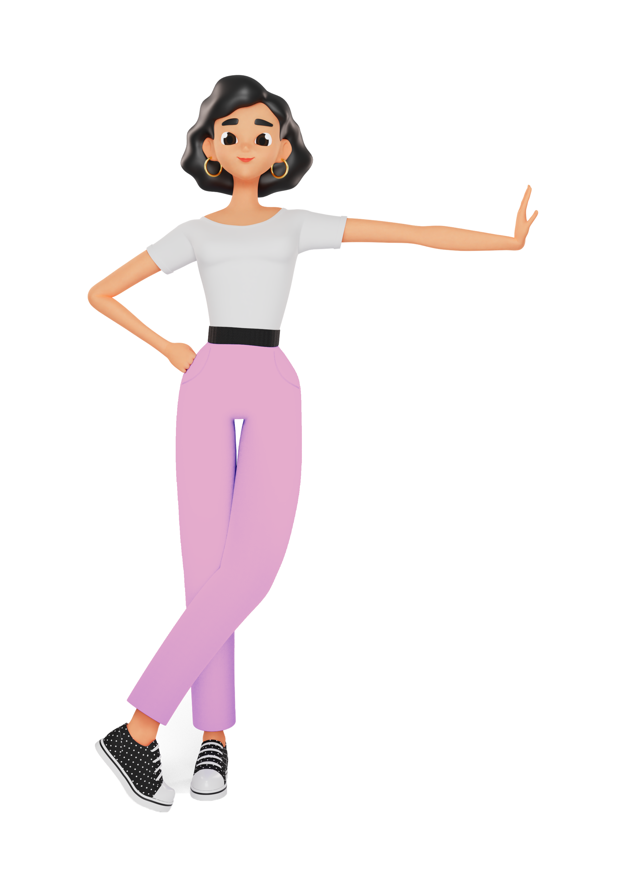
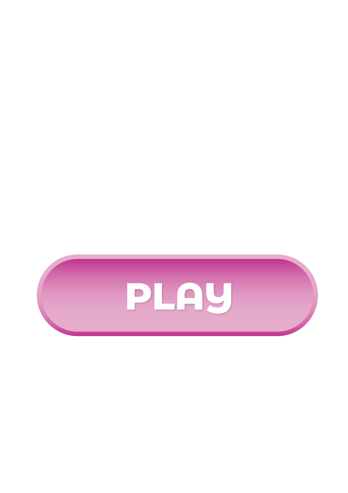

{{define "home"}}
<!DOCTYPE html>

<html lang="en">
	<head>
		<!-- Title -->
		<title>Mytho</title>

		<!-- Meta -->
		<meta charset="utf-8">

		<!-- Mobile Meta -->
		<meta name="viewport" content="width=device-width, initial-scale=1, shrink-to-fit=no">

		<!-- Favicon (http://www.favicon-generator.org/) -->
		<link rel="shortcut icon" href="favicon.ico" type="image/x-icon">
		<link rel="icon" href="favicon.ico" type="image/x-icon">

		<!-- Google Analytics -->
		<!-- Add your Google Analytics code here. -->

		<!-- Google fonts (https://www.google.com/fonts) -->
		<link rel="preconnect" href="https://fonts.googleapis.com">
		<link rel="preconnect" href="https://fonts.gstatic.com" crossorigin>
		<link href="https://fonts.googleapis.com/css2?family=Bellota" rel="stylesheet"> <!-- Body font -->
		<link href="https://fonts.googleapis.com/css2?family=Bellota" rel="stylesheet"> <!-- Secondary/Alter font -->

		<!-- Libs and Plugins CSS -->
		<link rel="stylesheet" href="assets/vendor/normalize/normalize.min.css"> <!-- Normalize CSS (https://necolas.github.io/normalize.css/) -->
		<link rel="stylesheet" href="assets/vendor/fontawesome/css/fontawesome-all.min.css"> <!-- Font Icons CSS (https://fontawesome.com) Free version! -->
		<link rel="stylesheet" href="assets/vendor/swiper/css/swiper-bundle.min.css"> <!-- Swiper CSS (https://swiperjs.com/) -->
		<link rel="stylesheet" href="assets/vendor/lightgallery/css/lightgallery.min.css"> <!-- lightGallery CSS (http://sachinchoolur.github.io/lightGallery) -->

		<!-- Template master CSS -->
		<link rel="stylesheet" href="assets/css/helper.css">
		<link id="tt-themecss" rel="stylesheet" href="assets/css/theme.css">

	</head>

	
	<!-- ===========
	///// Body /////
	================
	* Use class "tt-boxed" to enable page boxed layout globally (affects all elements containing class "tt-wrap").
	* Use class "tt-smooth-scroll" to enable page smooth scrolling.
	* Use class "tt-transition" to enable page transitions.
	* Use class "tt-magic-cursor" to enable magic cursor.
	* Note: there may be classes that are specific to this page only!
	-->
	<body id="body" class="tt-transition tt-boxed tt-smooth-scroll tt-magic-cursor">
		
		<a href="/room1"></a>


		<!-- *************************************
		*********** Begin body inner ************* 
		************************************** -->
		<main id="body-inner">

			<!-- Begin page transition (do not remove!!!) 
			=========================== -->
			<div id="page-transition">
				<div class="ptr-overlay"></div>
				<div class="ptr-preloader">
					<div class="ptr-prel-content">
						<!-- Hint: You may need to change the img height and opacity to match your logo type. You can do this from the "theme.css" file (find: ".ptr-prel-image"). -->
						
					</div> <!-- /.ptr-prel-content -->
				</div> <!-- /.ptr-preloader -->
			</div>
			<!-- End page transition -->

			<!-- Begin magic cursor 
			======================== -->
			<div id="magic-cursor">
				<div id="ball"></div>
			</div>
			<!-- End magic cursor --> 


			<!-- *****************************************
			*********** Begin scroll container *********** 
			****************************************** -->
			<div id="scroll-container"> 
				
				<!-- ===================
				///// Begin header /////
				========================
				* Use class "tt-header-fixed" to set header to fixed position.
				-->
				<header id="tt-header" class="tt-header-fixed">
					<div class="tt-header-inner"> <!-- add/remove class "tt-wrap" to enable/disable element boxed layout (class "tt-boxed" is required in <body> tag!). Note: additionally you can use prepared helper class "max-width-*" to add custom width to "tt-wrap". Example: "max-width-1500" (class "tt-wrap" is still required!). More info about helper classes can be found in the file "helper.css". -->

						<div class="tt-header-col">

							<!-- Begin logo 
							================ -->
							<div class="tt-logo"> 
								<a href="index.html">
									<!-- Hint: You may need to change the img height to match your logo type. You can do this from the "theme.css" file (find: ".tt-logo img"). -->
									 <!-- logo light -->
									 <!-- logo dark -->
								</a>
							</div>
							<!-- End logo -->

						</div> <!-- /.tt-header-col -->

						<div class="tt-header-col">

							<!-- Begin overlay menu toggle button -->
							<div id="tt-ol-menu-toggle-btn-wrap">
								<div class="tt-ol-menu-toggle-btn-text-wrap hide-cursor">
									<div class="tt-ol-menu-toggle-btn-text">
										<span class="text-menu" data-hover="Open">Instructions</span>
										<span class="text-close">Close</span>
									</div> <!-- /.tt-ol-menu-toggle-btn-text -->
								</div> <!-- /.tt-ol-menu-toggle-btn-text-wrap -->
								<div class="tt-ol-menu-toggle-btn-holder">
									<a href="#" class="tt-ol-menu-toggle-btn magnetic-item"><span></span></a>
								</div> <!-- /.tt-ol-menu-toggle-btn-holder -->
							</div>
							<!-- End overlay menu toggle button -->

							<!-- Begin overlay menu 
							======================== 
							* Use class "tt-ol-menu-count" to enable menu counter.
							-->
							<nav class="tt-overlay-menu tt-ol-menu-count">
								<div class="tt-ol-menu-ghost">Mytho</div>
								<div class="tt-ol-menu-holder">
									<div class="tt-ol-menu-inner tt-wrap">
										<div class="tt-ol-menu-content">

											<!-- Begin menu list -->
										<div class="intructions">	
											<a><strong>Les Instructions :</strong><br>
											<br>
												<I><U>MYTHO</I></U> !
												Constituez 2 équipes
												Chaque équipe se place devant l’ordinateur, et nomme un chef de groupe 
												Le chef de groupe aura pour rôle de gérer l’ordinateur  <br>
												<br>
												<I>Étape 1 :</I>Les 2 équipes reçoivent au moment de leur tour une question/ réponse sur le SEO et se concertent pour inventer 2 fausses réponses. Une fois décidées, l’équipe de mytho note deux réponses fausses, dans l’ordre de leur choix, dans les champs dédiés. (La vraie réponse est déjà notée)<br>
												<br>
												<I>Étape 2 :</I>Une fois les réponses préparées, c’est au tour de l’équipe adverse de prendre la main sur le pc, pour trouver la bonne réponse et miser.<br>
												<br>
												Il est primordial que l’équipe qui répond se concerte pour trouver la bonne réponse. <br>
												L’équipe qui répond mise des jetons sur la proposition qu’elle pense correcte mais elle peut les répartir sur plusieurs choix en cas de doute. (minimum 3 jetons par réponse - pas de maximum)<br>
												<br>
												Après 1 minute, la bonne réponse est dévoilée : Les jetons placés sur la bonne réponse sont conservés par l’équipe qui a misé, les jetons placés sur les fausses réponses sont distribués à l’équipe adverse.<br>
												<br>
												<I>Étape 3 :</I>Lorsque les 2 équipes de mytho on fini leur manche, un mini-jeu se lance : un mytho de chaque équipe est désigné pour prendre les commandes. L’équipe qui finit le mini-jeu dans les meilleurs délais remporte le droit de répondre à une question bonus, si elle trouve la bonne réponse, elle gagne 5 jetons supplémentaires.<br>
												La partie peut durer 3, 6 ou 9 manches. L’équipe de mytho qui a le plus de jetons à la fin des manches gagnes.
											</a>

											<!-- End menu list -->

											<!-- Begin overlay menu social links 
											===================================== -->
											
											<!-- End overlay menu social links -->
										</div>
										</div> <!-- /.tt-ol-menu-content -->
									</div> <!-- /.tt-ol-menu-inner -->
								</div> <!-- /.tt-ol-menu-holder -->
							</nav> 
							<!-- End overlay menu -->

						</div> <!-- /.header-col -->
					</div> <!-- /.header-inner -->
				</header>
				<!-- End header -->

				
				<!-- *************************************
				*********** Begin content wrap *********** 
				************************************** -->

        

		<!-- ====================
		///// Scripts below /////
		===================== -->

		<!-- Core JS -->
		<script src="assets/vendor/jquery/jquery.min.js"></script> <!-- jquery JS (https://jquery.com) -->

		<!-- Libs and Plugins JS -->
		<script src="assets/vendor/gsap/gsap.min.js"></script> <!-- GSAP JS (https://greensock.com/gsap/) -->
		<script src="assets/vendor/gsap/ScrollToPlugin.min.js"></script> <!-- GSAP ScrollToPlugin JS (https://greensock.com/scrolltoplugin/) -->
		<script src="assets/vendor/gsap/ScrollTrigger.min.js"></script> <!-- GSAP ScrollTrigger JS (https://greensock.com/scrolltrigger/) -->

		<script src="assets/vendor/smooth-scrollbar.js"></script> <!-- Smooth Scrollbar JS (https://github.com/idiotWu/smooth-scrollbar/) -->
		<script src="assets/vendor/swiper/js/swiper-bundle.min.js"></script> <!-- Swiper JS (https://swiperjs.com/) -->
		<script src="assets/vendor/isotope/imagesloaded.pkgd.min.js"></script> <!-- imagesloaded JS (more info: https://imagesloaded.desandro.com/) -->
		<script src="assets/vendor/isotope/isotope.pkgd.min.js"></script> <!-- Isotope JS (http://isotope.metafizzy.co) -->
		<script src="assets/vendor/isotope/packery-mode.pkgd.min.js"></script> <!-- Isotope Packery Mode JS (https://isotope.metafizzy.co/layout-modes/packery.html) -->
		<script src="assets/vendor/lightgallery/js/lightgallery-all.min.js"></script> <!-- lightGallery Plugins JS (http://sachinchoolur.github.io/lightGallery) -->
		<script src="assets/vendor/jquery.mousewheel.min.js"></script> <!-- A jQuery plugin that adds cross browser mouse wheel support (https://github.com/jquery/jquery-mousewheel) -->

		<!-- Template master JS -->
		<script src="assets/js/theme.js"></script>


	</body>

</html>
{{end}}